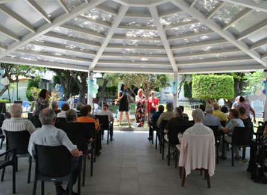
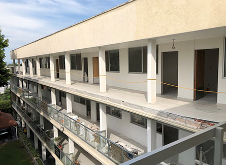
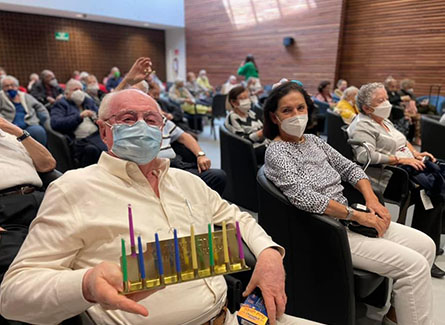
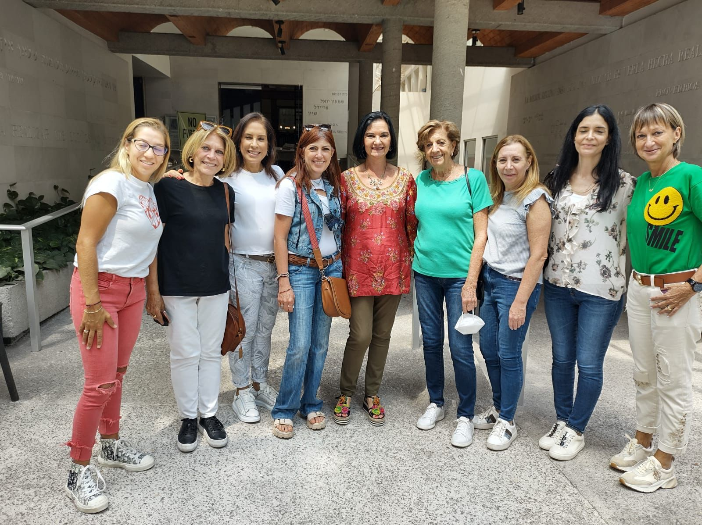

GRUPO DE DAMAS
1974 - 1979

El grupo de damas voluntarias organiza diversas, actividades, tales como festividades judías y visitas de escuelas. Participando en el comité de damas. Se construyeron 14 nuevas habitaciones, cuartos para enfermeros crónicos; se recibió un donativo de un edificio con cuatro departamentos.
EXPANSIÓN
2000 - 2007

Asume la presidencia del patronato el Sr. Marcos Lerman. Se construye el tercer piso de habitaciones en el edificio Bugambilias, además de un centro cultural con una ampliación de la sala Davidoff y un área de baños y lockers para el personal.
RESIDENTES
2011 - 2017

Se adquiere la propiedad vecina para una posible ampliación en el futuro, se remodela la sala Davidoff y se moderniza el equipo, La señora Judith Gorinstein es nombrada presidenta de las amigas del Eishel. Se tiene la capacidad para 140 residentes.
PATRONATO
2020 - 2023

Judith Gorinstein es nombrada presidenta del patronato. Se concluye la remodelación de las áreas de centro cultural y fisioterapia